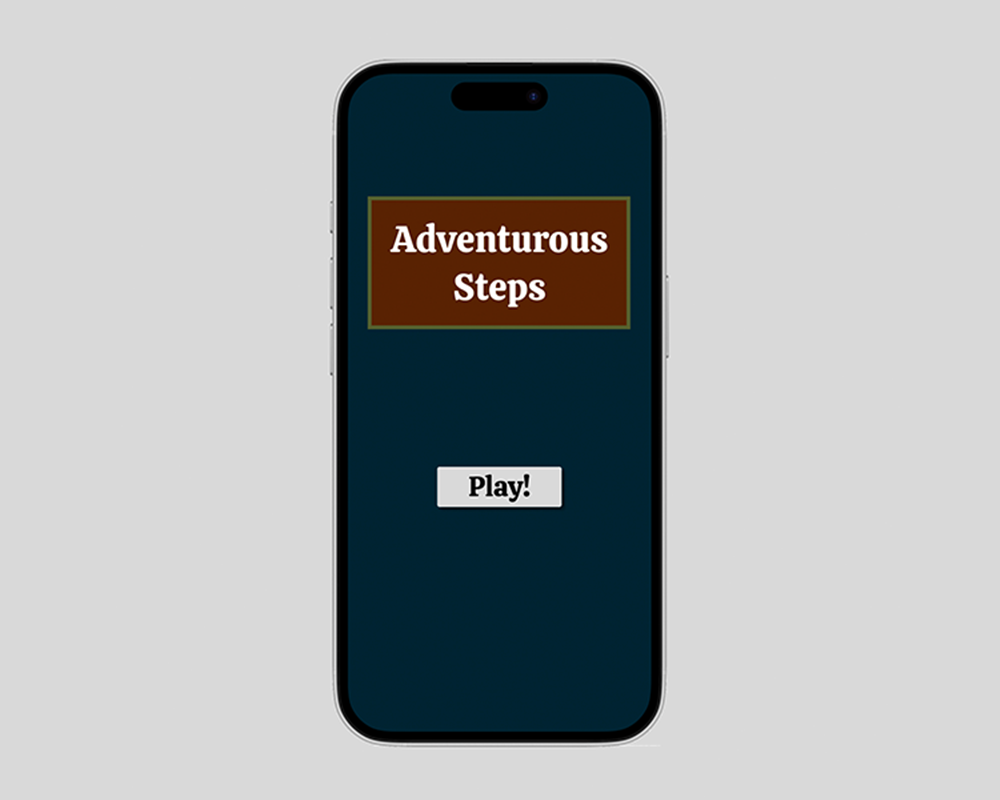
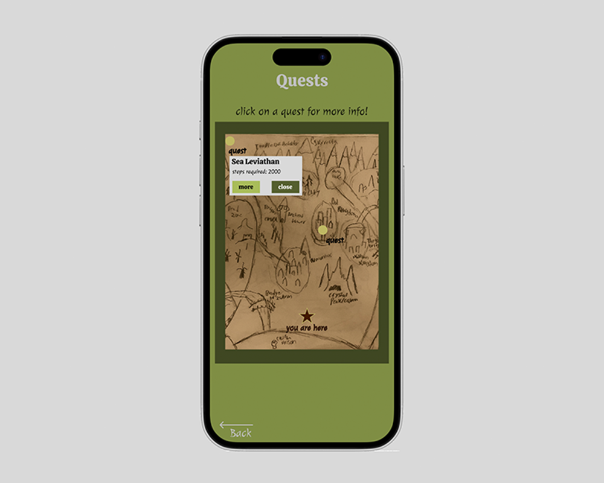
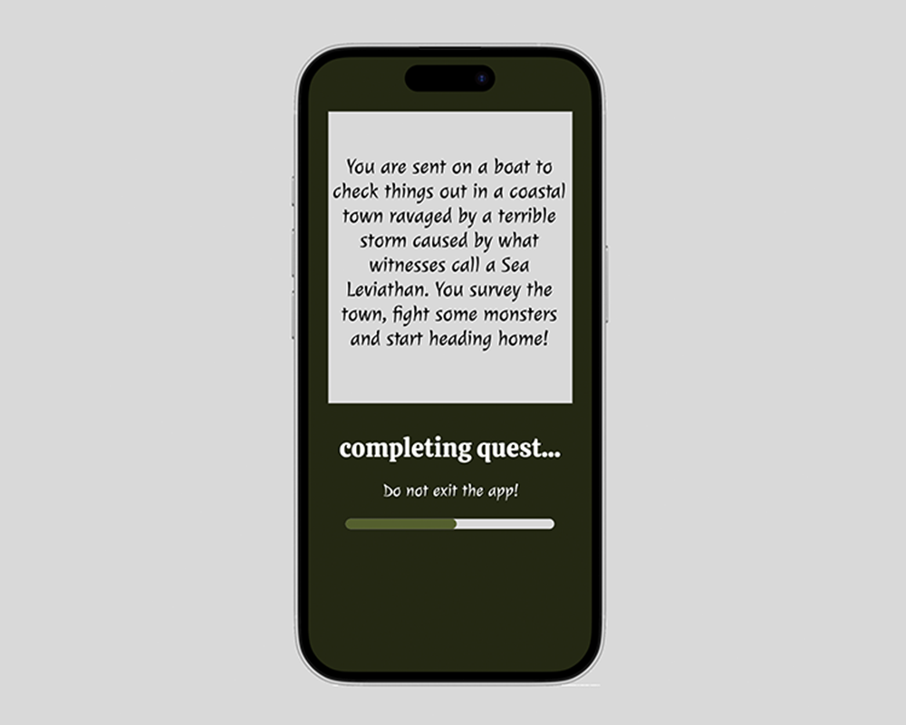
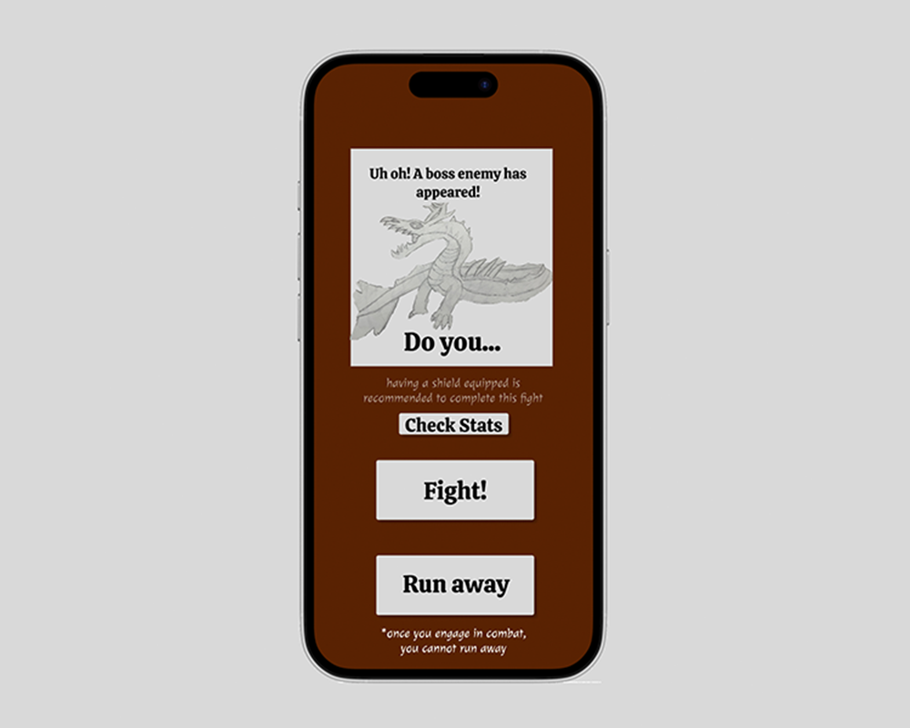
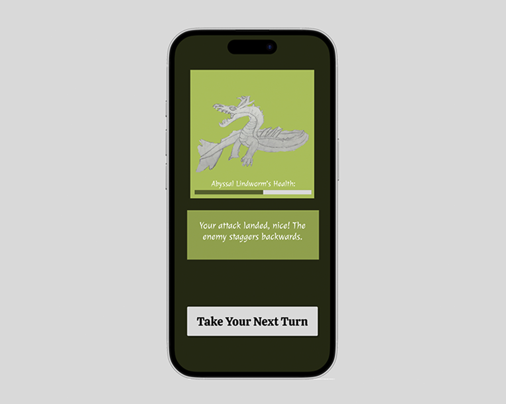

Adventurous Steps
November 2024
- Figma
This Figma prototype is meant to represent a mobile app designed to track daily movement while also implementing an interactive game experience. Completed in IGME 110: Introduction to Interactive Media.